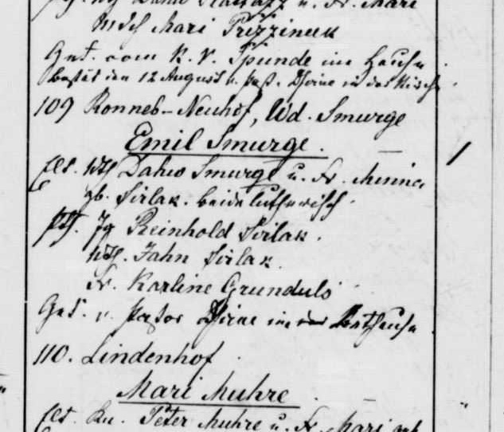

Minna Sirlaka b. 1866
Peter's first cousin 4 times removed.
Also recorded as Minna Sirlaks.
Minna Sirlaka was born on 8 Mar 1866 in Jāņmuiža, Priekuļi, Cēsis district, Vidzeme, Latvia2,3, the daughter of Jānis Sirlaks and Līze Veidenbauma2. She has died (according to an online family tree)6, but the date of death is not yet documented.
Family
- Parents
- Jānis Sirlaks 1829–1901 and Līze Veidenbauma 1836–1902 documented
Life events
| Event | Date | Place and details |
|---|---|---|
| Born | 8 Mar 1866 | Jāņmuiža, Priekuļi, Cēsis district, Vidzeme, Latvia Old Style (Julian) date: 24 Feb 18662,3 |
| Lived | bet 1869 and 1890 | Vīstuči farm, Jaunrauna, Rauna, Cēsis district, Vidzeme, Latvia4 |
| Lived | Apr 1890 | Smurģi farm, Jaunrauna, Rauna, Cēsis district, Vidzeme, Latvia5 |
| Died | not yet documented | According to an online family tree6 |
Records

Open questions
Sources
- MyHeritage family tree 'Dzimta' of Peter's third cousin (his family site), member GEDCOM export of 26 Oct 2026, I128 (person-6000128), GEDCOM lines 3947–3975.
NAME Minna /Sirlaks/
His confirmed Smart Match with another tree: Strengu radi un kaimiņi, Minna Silārs (added by confirming the match). His confirmed Smart Match with another tree: Voroņinu dzimtas lapa, https://www.myheritage.lv/person-1527229_OYYV6GBPG4CM5LFSTTVZUJF4R3XV7FQ_OYYV6GBPG4CM5LFSTTVZUJF4R3XV7FQ/minna-sil%C4%81rs (added by confirming the match). His confirmed Smart Match with another tree: Voroņinu dzimtas lapa, https://www.myheritage.lv/person-1527229_OYYV6GBPG4CM5LFSTTVZUJF4R3XV7FQ_OYYV6GBPG4CM5LFSTTVZUJF4R3XV7FQ/minna-sil%C4%81rs (added by confirming the match).
- Ainas Sirlakas atmiņas ("Vīstuči"), Aina Jurciņa née Sirlaka, Priekuļi, 1998, p. 8, section "MĀRČA BRĀĻA JĀŅA GAITAS".
Minna dzim. Jāņmuižas dzirnavās 1866.
Translation: Minna, born at Jāņmuiža mill 1866
parents: Jānis Sirlaks and Līze née Veidenbaums. Probably the "Minna Smurge née Sirlaka" who was a godparent in 1890.
- MyHeritage family tree 'Dzimta' of Peter's third cousin (his family site), member GEDCOM export of 26 Oct 2026, I128 (person-6000128), GEDCOM lines 3947–3975.
BIRT · 24 FEB 1866 · Jāņmuižas dzirnavas
Date: Julian (Old Style), as in the church books: = 8 Mar 1866 (Gregorian), as we have it.
- Kalna Vīstuči household of Jānis Sirlaks.
Sirlak Jonh dz. Jaunraunā “Spāriņos”, dzīv.”Kalna Vīstučos” … | Minna | dzim. Jāņmuižas dzirnavās 1866. |
Grew up at Kalna Vīstuči on the Jaunrauna estate after her father Jānis Sirlaks bought the farm in 1869.
- Rauna baptisms 1890, no. 109, LVVA f. 235, apr. 7, l. 517, image 452, LVVA f. 235, apr. 7, l. 517, image 452.
109. Ronneb.-Neuhof, Wd.[?] Smurge. Emil Smurge. Elt. Wth Dahw Smurge u. d. Fr. Minna geb. Sirlak. beide lutherisch. Pth. Jg. Reinhold Sirlak, Wth Jahn Sirlak, Fr.[?] Karline Grundul[?]
Translation: No. 109. Ronneburg-Neuhof, Smurge farm: Emil Smurge. Parents: farmer Dāvis Smurge and wife Minna née Sirlak. Godparents: bachelor Reinhold Sirlak, farmer Jahn Sirlak, Mrs[?] Karline Grundul[?]
Probably the 'Minna geb. Sirlak', wife of farmer Dāvis Smurģis ('Wth Dahw Smurge u. d. Fr. Minna geb. Sirlak'), at the Smurge farm in Ronneburg-Neuhof (Jaunrauna) when their son Emil was baptised in 1890 (Rauna baptisms 1890 no. 109). Godparents Reinhold Sirlak and Jahn Sirlak.
- MyHeritage family tree 'Dzimta' of Peter's third cousin (his family site), member GEDCOM export of 26 Oct 2026, I128 (person-6000128), GEDCOM lines 3947–3975.
DEAT · Y (marked deceased; no date or place)